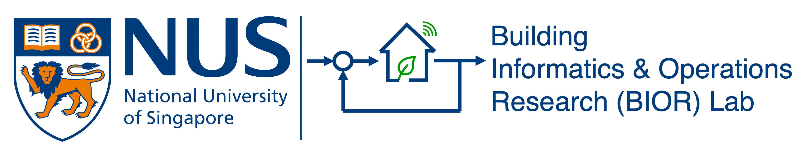
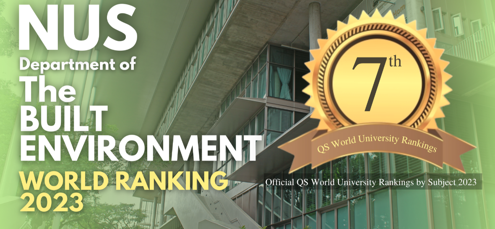

Building Informatics and Operations Research (BIOR) Lab is directed by Dr. Maomao Hu, Assistant Professor of the Department of the Built Environment, College of Design and Engineering, National University of Singapore.
The overarching goal of our lab is to develop sustainable and scalable technologies and computational tools to make today’s building and urban energy systems low-carbon, energy-efficient, energy-flexible, climate-resilient, and equitable. We employ a multifaceted approach that encompasses data analytics and machine learning, physics-based modeling and simulation, optimization and model-based optimal controls, as well as experiments. These approaches have been deployed across a spectrum of scales, spanning from equipment- through building- and community- to city-scale.
We warmly invites applications from students with backgrounds in Building Environment and Energy Engineering (i.e., Architectural Engineering/HVAC&R Engineering), Electrical and Computer Engineering (e.g., microgrids, automation, etc.), Thermal Engineering (e.g., heat and mass transfer, thermodynamics, etc.), Mechanical Engineering (e.g., fluid mechanics), or Applied Mathematics.
PhD scholarship - We are looking for one fully funded Ph.D. student to join our team starting from Jan 2025 or later. Candidates need to submit their complete application by July. 1, 2024 for the admission in Jan 2025. [Closed]
PhD scholarship - We are currently looking for 2-3 fully-funded Ph.D. students to join our team starting from Fall 2024 or later. 12-month stipend plus a tuition fee subsidy are covered for this position for 4 years (check NUS Research Scholarship). Candidates need to submit their complete application by Jan. 1, 2024 for the admission in Fall 2024. [Closed]
(Note: English is the default lingua franca in Singapore, as well as at NUS and in our BIOR lab. Please check here for more information on general requirements for Ph.D. admission, including the validity period for GRE/TOEFL/IELTS)
An admission to the PhD programme does not garantee a scholarship. Some admissions are on a self-funded basis. Please explore the potential scholarship opportunities available at NUS, including
Prospective Ph.D. students should send an email with the subject line as Prospective_PhD_{First Name}_{Last Name} to the email address
maomaohu@nus.edu.sg for inquiries. The email should be written in English and include the following:
Please rest assured that your application wil be carefully evaluated. Strong applicants will be contacted asap for a Zoom interview.
There are two intakes (August and January) each year. The application deadlines are normally 1 Janurary for the intake in August, and 1 July for the intake in January next year.
The availability of Research Assistant (RA) and postdoctoral positions varies depending on the funding conditions. If you are interested in our research focus, you are encouraged to contact Dr. Hu to explore potential opportunities. To apply, please include your CV, a brief summary of your research experience and interests, and the contact information for at least two references, with a subject line as RA/Postdoc_Application_{First Name}_{Last Name}.
We welcome visiting students/scholars who are interested in collaborating with us. Ideally, students/scholars will be able to visit for a minimum of six months (preferably one year) to maximize the opportunity for collaboration and research. We can accommodate in-person/virtual visits but the funding is not guaranteed and self-funded visiting is preferred.
If you are interested in exploring the possibility of working with us, please email Dr. Hu with a subject line as Visiting_Application_{First Name}_{Last Name}. Please include the following documents in your email: CV, a brief research proposal (1-2 pages) aligned with our group, desired period of stay, and funding source. Please check
here and
here for more information on the visting program as non-graduating research students at NUS.
The National University of Singapore (NUS) is Singapore’s flagship university, which offers a global approach to education, research and entrepreneurship. NUS holds an outstanding reputation in the fields of engineering, science, business, and law. Globally, NUS was #8 in the QS World University Rankings 2025, #19 in the Times Higher Education (THE) World University Rankings 2024, #22 in the US News 2024-2025 Best Global Universities Rankings.
For subject rankings, NUS’s engineering programs are ranked #8 in the world in the latest THE World University Rankings 2023 by Subject. NUS’s program of Built Environment is ranked #5 in the QS World University Rankings by Subject 2024.
